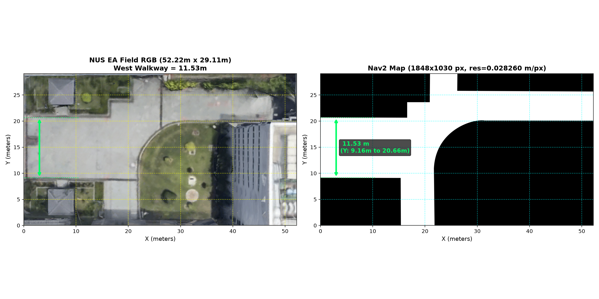
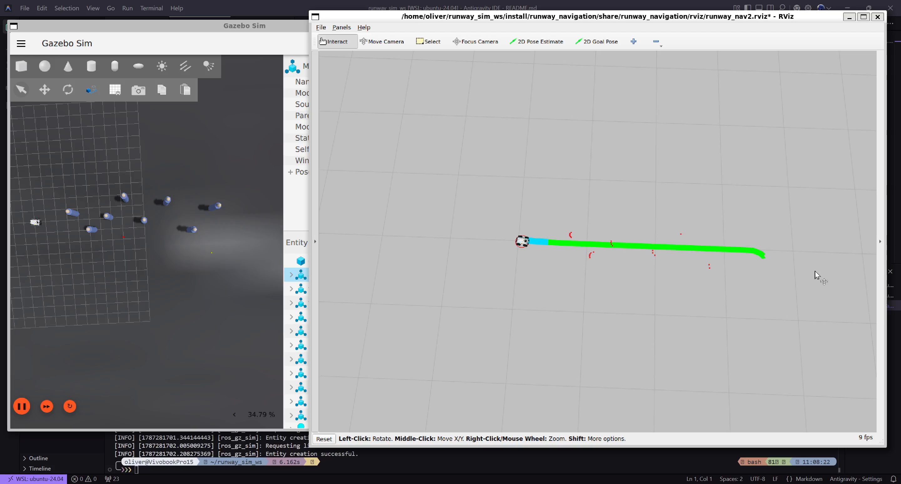
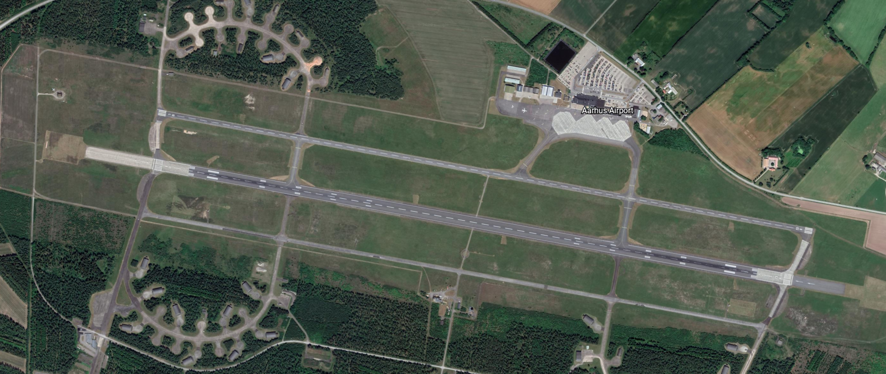
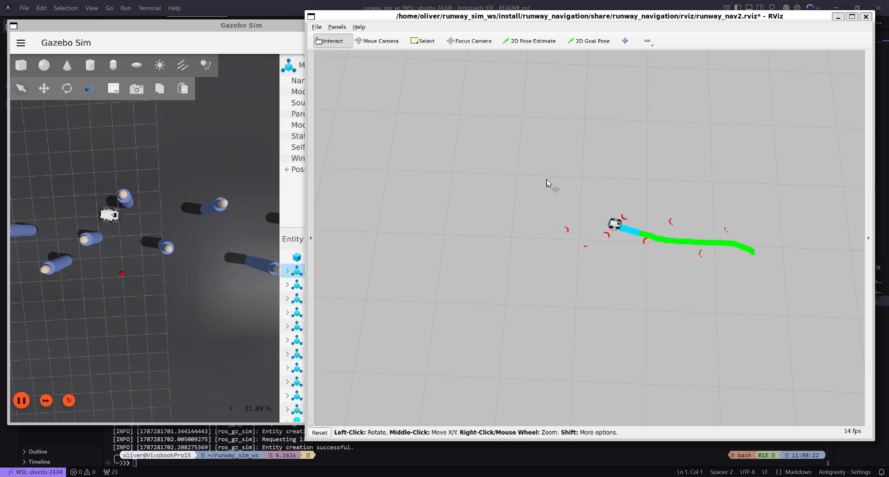

This technical specification documents the architecture, asset pipeline, node connectivity, and operational run guide for the Runway Patrol robotic simulation environment. The simulation enables rapid software-in-the-loop verification of global path planners (A* / NavFn), dynamic costmap inflation, local obstacle avoidance, and C2 waypoint dispatch prior to physical chassis deployment.
Interactive video captures demonstrating autonomous obstacle avoidance, trajectory generation, and path execution across both simulation worlds:
📍 NUS EA Field Autonomous Navigation
Phase 1 TargetAgileX Scout V2 proxy rover navigating outdoor campus walkways, avoiding simulated dynamic obstacles, and executing waypoints cued through Nav2 on the aerial orthophoto map.
🛫 Aarhus Airport Runway Patrol (EKAH)
Reference Exploration100m high-speed asphalt corridor sweep, centerline tracking, and multi-obstacle avoidance simulation modeled after Aarhus Airport Runway 10R/28L.
📍 1. NUS EA Field Environment (In Scope)
The NUS EA Field simulates an outdoor courtyard setting with complex boundary geometries, including concrete pathways, grass zones, building perimeter walls, and pedestrian walkway constraints.
🗺️ Aerial Satellite Texture Model

High-resolution Google Earth orthophoto used as ground plane texture.
📐 Field Dimensions & Zone Annotations

Annotated boundary dimensions and non-traversable obstacle masks.
🛫 2. Aarhus Airport Runway (EKAH) Environment (Reference)
A 100m × 20m high-fidelity asphalt runway model featuring runway edge lighting, painted centerline markings, thresholds, and sparse long-distance line-of-sight conditions.
🌐 Gazebo 3D Runway World

Simulated outdoor physics world with realistic lighting & friction coefficients.
🛫 Runway Surface Terrain Model

Asphalt surface collision mesh with centerline and touchdown markings.
🤖 Robotic Platform (Proxy Model)
- Chassis: AgileX Scout V2 4WD differential-drive rover
- 2D LiDAR: Hokuyo laser scanner (
/scan) for obstacle detection - Forward Camera: Optical sensor (
/camera/image_raw) for forward visual feed - State Estimation: Wheel odometry fused with static runway map alignment
🧠 Autonomous Autonomy Stack
- Global Planning: Nav2 NavFn (A* algorithm) covering entire corridor
- Local Controller: DWB / Regulated Pure Pursuit velocity smoother
- Obstacle Avoidance: Real-time dynamic costmap inflation around detected FOD
- Visualization: Pre-configured RViz2 inspection interface
1. System Requirements
- Operating System: Ubuntu 24.04 LTS (Noble Numbat)
- ROS Distribution: ROS 2 Jazzy Jalisco
- Simulator: Gazebo Sim Harmonic (
gz-sim)
2. Install Required APT Packages
Open a terminal (Ctrl + Alt + T) and install the required ROS 2 Jazzy packages:
Before running the simulation for the first time or whenever configuration files are modified:
source /opt/ros/jazzy/setup.bash initializes ROS 2 commands, and source install/setup.bash overlays project-specific packages and custom plugins onto your shell session.
Running the simulation requires two separate terminal windows (or tabs) for the simulator and the Nav2 autonomy stack.
🟢 Environment 1: NUS EA Field (Phase 1 Target)
Terminal 1: Start Gazebo Simulation
Terminal 2: Start Nav2 & RViz2
Terminal 3 (Optional): Dynamic Obstacle Spawner
🟢 Environment 2: Aarhus Airport Runway (EKAH)
Terminal 1: Start Gazebo Runway Simulation
Terminal 2: Start Nav2 & RViz2

RViz2 active inspection interface showing global A* path (green line), costmap inflation, and laser scans.
Dispatching Navigation Goals:
- Click the
Nav2 Goaltool button in the RViz2 top toolbar (or press g on your keyboard). - Hover your mouse over the target destination coordinate on the 2D occupancy map.
- Left-click and hold at the destination point.
- Drag your cursor to define the desired terminal heading orientation (arrow vector).
- Release the mouse button to publish the goal pose to
/goal_pose.
/cmd_vel) to track the trajectory while dynamically avoiding obstacles.
When terminating a simulation session, press Ctrl + C in each terminal window. To purge any orphaned background Gazebo or ROS 2 daemon processes: